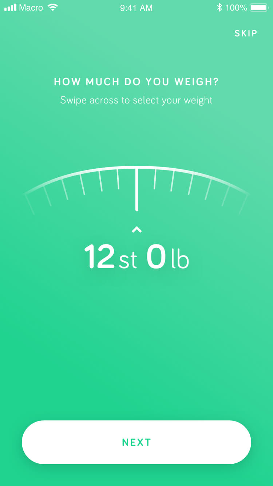
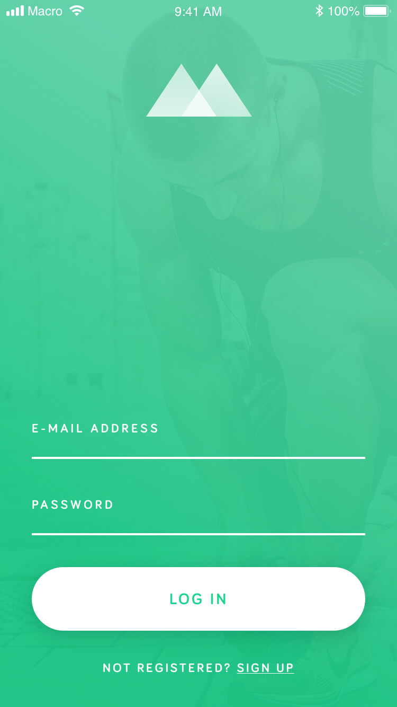
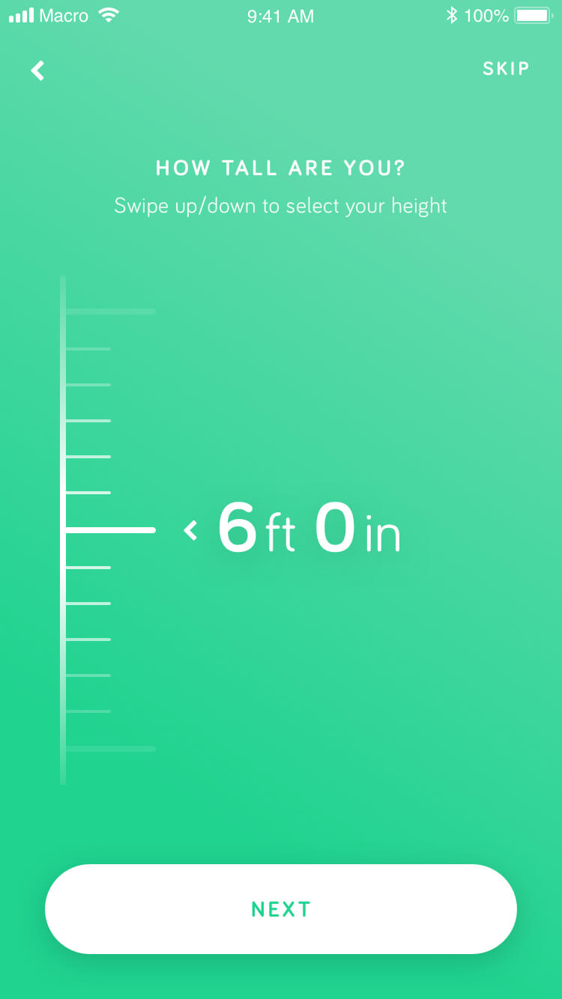
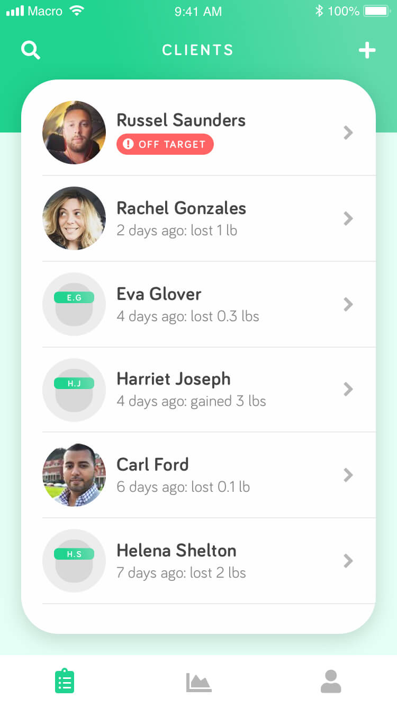
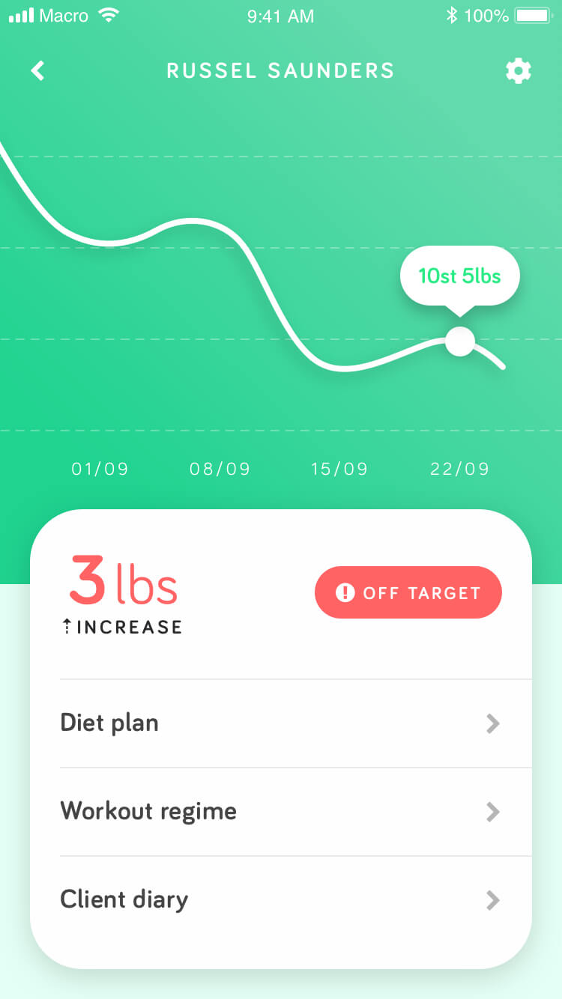
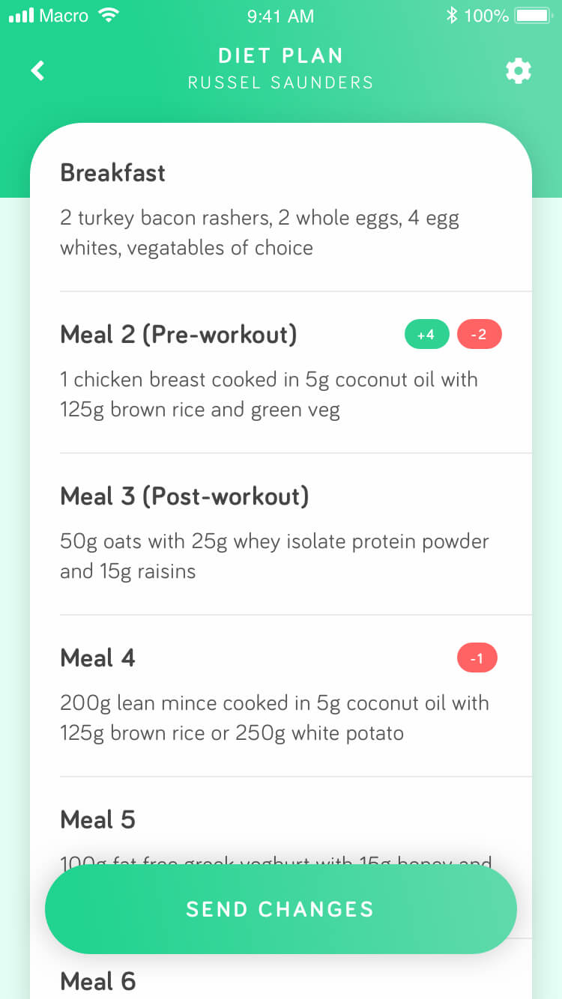
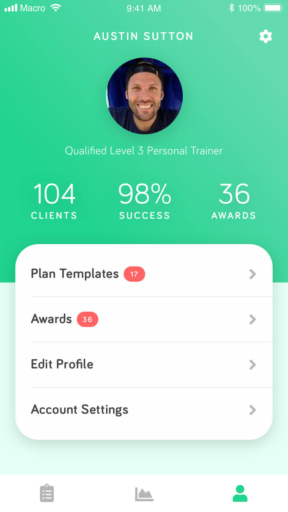

<!DOCTYPE html><html class="no-js"><!--[if lt IE 9]
| <script src="http://html5shim.googlecode.com/svn/trunk/html5.js"></script--><head><meta charset="UTF-8"><title>KYTE. App &amp; Website design in Sheffield.</title><link href="../favicon/apple-touch-icon.png" rel="apple-touch-icon" sizes="180x180"><link href="../favicon/favicon-32x32.png" rel="icon" sizes="32x32" type="image/png"><link href="../favicon/favicon-16x16.png" rel="icon" sizes="16x16" type="image/png"><link href="../favicon/site.webmanifest" rel="manifest"><meta content="width=device-width, initial-scale=1, maximum-scale=1" name="viewport"><link href="../css/style.css" rel="stylesheet" type="text/css"></head></html><body class="light-body page__projects"><nav data-aos="fade-down"><div class="nav-inner"><a class="subtext site-logo" href="/" id="homeLink">Kyte<span class="active-indicator">.</span></a><ul class="nav-links"><li class="nav-links__item" id="projectsLink"><a class="nav-links__link" href="/projects.html">Projects<span class="active-indicator">.</span></a></li><li class="nav-links__item" id="contactLink"><a class="nav-links__link" href="/contact.html">Contact<span class="active-indicator">.</span></a></li></ul></div></nav><div class="wrapper"><div class="background-angle"></div><div class="content"><div class="hero"><div class="section__1-2"><div data-aos="fade-right"><div class="subtext text--highlight">Case Study</div><h2 class="text--large text--bg">Macro<br>App</h2></div><p data-aos="fade-left">Macro aims to connect trainers with their ever growing client base. Easing the burden of tracking clients progress through multiple communication channels. We designed an app that gave Trainers a simple yet powerful way to track all their clients progress and quickly identify those that were going off target or missing a check-in.</p></div></div><div class="imgs--even"><div class="imgs__logo--macro"><div class="imgs__logo-float"></div></div></div><div class="section"><div class="text-only text--invert"><p>Each screen within the app is designed with the main interactions towards the lower half of the screen, this allows for more comfortable use and reinforces Macro's goal of being quick and easy to track client progress on the go.</p><p>Trainers told us the more information they have on their clients, the more accurately they can assist them with their goals. To do this we needed users to fill out forms, and no one likes doing that! we obscured this behind fun iteractive widgets so that people would enjoy the onboarding process:</p></div></div><div class="imgs--even"><div class="imgs__app-screen imgs__device--invisible" data-aos="fade-left"></div><div class="imgs__app-screen imgs__device"></div><div class="imgs__app-screen imgs__device--invisible" data-aos="fade-right"></div></div><div class="section section--hero"><h1 class="text--x-large text--light">personal<br>tracking</h1></div><div class="imgs--even"><div class="imgs__app-screen imgs__device" data-aos="fade-right"></div><div class="imgs__app-screen imgs__device" data-aos="fade-left"></div></div><div class="section"><div class="text-only text--invert"><p>For trainers using Macro we wanted to make sure that they could see what needed their attention at a glance, but scrutinise the data further with just a couple of taps.</p><p>Trainers are scored on their success and awarded for their accomplishments within the app which are prominently displayed on their profiles, this allows them to attract new clients through their social media channels.</p></div></div><div class="imgs--even"><div class="imgs__app-screen imgs__device" data-aos="fade-right"></div><div class="imgs__app-screen imgs__device" data-aos="fade-left"></div></div></div></div><footer class="text--center"><div class="footer__content" data-aos="fade-up" data-aos-duration="800"><h2 class="text--large">Let's work together</h2><a class="button" href="/contact.html">Get in touch</a></div><div class="footer__meta"><div class="text--center">Kyte Digital Ltd - Company number 12531352 - Created with 💛 in Great Britain.</div></div></footer><script src="https://ajax.googleapis.com/ajax/libs/jquery/1.11.2/jquery.min.js"></script><script src="https://unpkg.com/aos@2.3.1/dist/aos.js"></script><script>// Init AOS animations
AOS.init();

// Header fixed animation
$(function() {
  var header = $(".nav-inner");
  $(window).scroll(function() {
    var scroll = $(window).scrollTop();

    if (scroll >= 1) {
      header.addClass("nav--stuck");
    } else {
      header.removeClass("nav--stuck");
    }
  });
});

// Netlify Contact form submission
var contactForm = $("#contact-form");

$(contactForm).submit(function(e) {
  e.preventDefault();

  var $form = $(this);
  $.post($form.attr("action"), $form.serialize()).done(function () {
    $(contactForm).addClass("success");
    $("#contact-form fieldset, .form__submit").attr("disabled", true);
  }).fail(function () {
    $(contactForm).addClass("failed");
    setTimeout(function(){
      $(contactForm).removeClass("failed")
    }, 4000)
  });

});</script></body>
